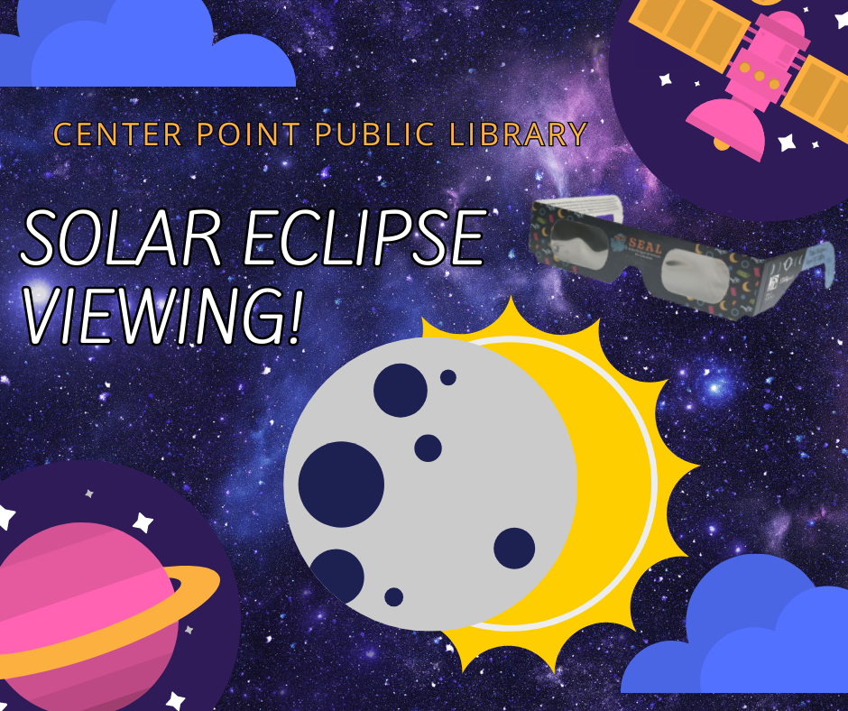

Click here to sign up for our newsletter! Enter your email address to get notified of our events.
Click here to view our catalog!
Click here to sign up for our Bucket Gardening program on April 20 at 11:00am!
Click here to sign up for our Medicare 101 program where you can learn the basics of Medicare.
Programs & Events

Solar Eclipse Viewing! April 8 at 1:30pm-2:30pm
Get ready to witness a celestial spectacle like no other! Join us under the sky at the Center Point Public Library for our Solar Eclipse Viewing. There will be crafts, snacks, and free eclipse glasses while supplies last. Please follow the link to sign-up for the event: https://form.jotform.com/231796638480064
ZUMBA! April 13 at 9:00am-10:00am
Jump start your weekend with a Zumba workout. All fitness levels welcome and encouraged.
The Latest
Staff Picks
New Book Tuesday
Fiction
Nonfiction
Graphic Novels
DVDs
Nosey Neighbors by Freya Sampson (Cara's Pick)
Plant You: Scrappy Cooking by Carleigh Bodrug (Cara's Pick)
Unicorn Boy by Dave Roman (Emily's Pick)
Felice and the Wailing Woman by Diana Lopez (Emily's Pick)
What Happened to Ruthy Ramirez by Clare Jimenez (Cara's Pick)
I Feel Awful, Thanks by Laura Pickle (Emily's Pick)
Somehow: Thoughts on Love by Anne Lamott (Tiara's Pick)
Kindling by Traci Chee (Tiara's Pick)
Our Services
Technology
Digital Printing
Study Rooms
Curbside Pickup
The Center Point Public Library offers public computers for use by children, teens, and adults. All of our computers allow access to the Internet. To log onto public computers, you may use either your library card or a guest pass provided by a staff member. In addition to that, the Center Point Library also offers:
Free Public WiFi
Tech 1:1 Classes (by appointment only)
Laptops (in-library use only, valid library card required)
Other devices (for Center Point Residents only):
Digital Services & Resources
Catalog
Alabama Virtual Library
Libby
Hoopla
Career Alabama
Kanopy
Duolingo
EBSCO
The Center Point Public Library is apart of the Jefferson County Library Cooperative. With just one card, you can browse and search the online catalog, place holds on items, create and manage lists, and so much more!
Hours of Operation: Monday - Friday 9:00am-6:00pm Saturday 9:00am-2:00pm
Contact Us: Phone 205-536-7750 Address 533 Sunhill Rd NW, Center Point, AL 35215